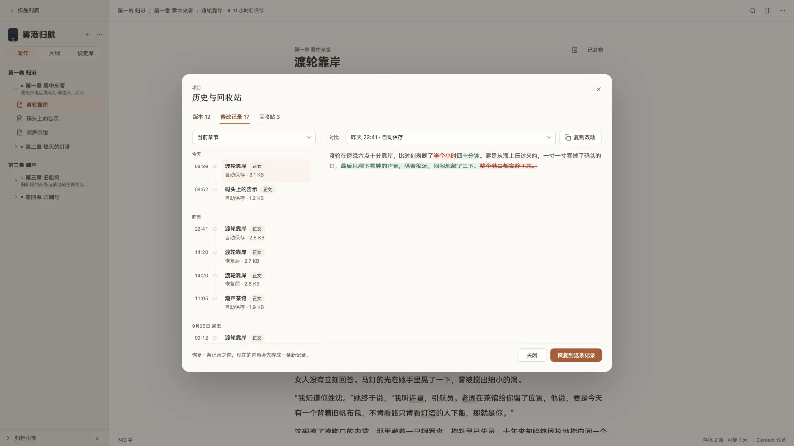

文件、历史与导出
稿件存在哪、自动保存、版本与回收站、备份和发布导出。
稿件存在哪
每本书是一个普通文件夹，默认在 文稿/NovelKit/<作品名>：
我的小说/
├── scenes/ 每个小节一份 Markdown 正文
├── chapters/ 章节信息
├── wiki/ 设定卡，每张一个 Markdown
├── outlines/ 大纲页面
├── snippets/ 片段
├── prompts/ 本项目的提示词
├── assets/ 封面、参考图、地图
└── .novelkit/ 项目树、修改记录、版本快照、回收站和可重建的索引你可以用任何编辑器打开这些文件，也可以把整个文件夹放进网盘或 Git。API Key 存在系统钥匙串，作者风格预设存在本机应用数据里，都不会随项目文件夹走。
自动保存
停止输入不到一秒就会保存。保存失败时顶栏会显示并可以重试；关窗时如果还有没保存的内容，会提示你。
历史与回收站

「更多 → 历史与回收站」有三个视图：
- 版本：整本书的快照。「存一个版本」手动存，起了名字的和手动存的永久保留；全书替换、AI 改写、恢复备份或版本、永久删除之前也会自动存一个。恢复版本后还能「撤销恢复」。
- 修改记录：正文、设定卡、片段、提示词每次保存都会留一条，可以「对比」「复制改动」「恢复到这条记录」。恢复前会先把当前内容再存一条。
- 回收站：删除的章节、设定卡、片段、提示词、大纲页和参考图都先进这里，可以恢复或永久删除。在欢迎页「删除这本书」则是把整个文件夹移到系统废纸篓。
备份与恢复
「更多 → 备份与恢复」：
- 导出备份：把整个项目打成一个备份包（不含密钥和缓存），需要存在项目文件夹之外。
- 恢复项目：「恢复为副本」，或「覆盖当前项目」（覆盖前会先存一份可回退的副本）。
发布导出
- 范围：全书、卷、章或小节；格式：Markdown、DOCX 或 TXT；合并为一个文件或每章一个文件。
- 包含内容：标题、小节标题、摘要、小节分隔线可选。情节点草稿、研究笔记和密钥永远不会导出。
- 发布预设：通用、两个全角空格缩进、仅正文。各平台的具体格式要求请以平台为准。
- 日更时用章节右键「复制本章」直接粘贴到平台后台，再「标为已发布」。章节状态有草稿、已完成、已发布、定时发布。
- 在「项目设置 → 连载」填每天更新几章，状态栏会显示「存稿 N 章 · 可更 N 天」。